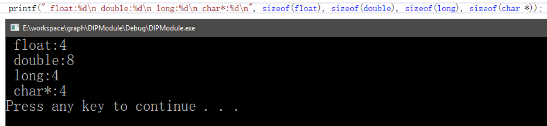
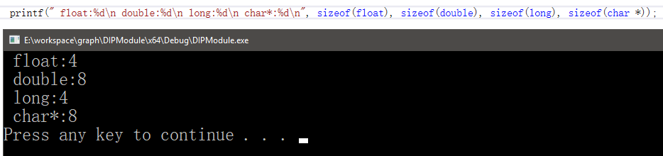
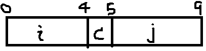
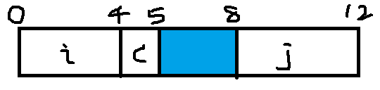
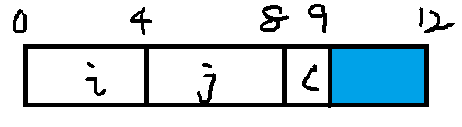

计算机的字节对齐
凡事皆有因，刨根问底，追求极致。
前言
在BMP文件处理（C语言实现）一文中说到文件头的自定义结构体会引起“字节对齐效应”，进而造成文件读取属性错位，严重造成读取错误。这篇文章主要回顾总结一下字节对齐问题。内容总结自《深入理解计算机系统》。
什么是字节对齐
许多计算机系统对基本数据类型的合法地址做了一些限制，要求某种类型对象的地址必须是某个值K（通常是2，4，8）的倍数。
无论是否对齐，x86-64硬件都能正常工作。不过Intel还是建议要对齐数据以提高内存系统的性能。
字节对齐有什么好处
字节对齐有一些隐含的好处：
- 简化形成处理器和内存系统之间的硬件设计。
- 提高内存系统的效率
- 例如一个处理器总是从内存中读取8个字节，那么地址必须为8的倍数。比如说double类型，如果地址为8的倍数只需要读取1次就能获得，否则可能需要执行两次内存访问，因为数据放到了两个8字节内存块中。
字节对齐原则
任何K字节大小的基本对象的地址必须是K的倍数。，“对于结构体，结构体的地址是结构体内最大元素大小的整数倍，结构体的大小是结构体内最大元素字节大小的整数倍”。
一些基础数据类型的对齐方式
一些常见的基本类型根据字节对齐原则获得的对齐地址方式如下：
| K | 类型 |
|---|---|
| 1 | char |
| 2 | short |
| 4 | int,float |
| 8 | long,double,char* |
注意：这些类型都是在x86-64位某些特定机下的64位模式运行时对齐方式。
确保每种数据类型都是按照指定方式来组织和分配，即每种类型的对象都满足它的对齐限制，就可保证实施对齐。
比如我的电脑是x86-64位机，但是针对VS有x86和x64两种模式。这有不同的结果：
x86

x64

于是类型所占字节大小不同，所以K值不同。不管类型大小为多少个字节，只要根据字节对齐原则就可以了。
一些例子
汇编命令
编译器在汇编代码中放入命令，指明全局数据所需的对齐。
1 | .align 8 |
该命令保证了它后面的变量的起始地址是8的倍数。
结构体的字节对齐
- eg-1
编译器会对包含结构体的代码内部需要的字段插入间隙，以满足对其要求。
1 | struct S1 { |
int和char的大小分别是4个字节、1个字节。假设编译器用最小的9字节分配，画出来是这样的：

这样int变量i和j是无法同时满足对齐原则的。
取而代之，编译器在字段c和j之间插入一个3字节的间隙（蓝色部分）。

此外，编译器必须保证任何 Struct S1 * 类型的指针p都满足4字节对齐。这样保证了首元素（变量i）是4字节对齐，而且内部变量也都是4字节对齐了。
- eg-2
对于结构体数组，编译器可能会在结构体末尾进行填充来满足其对齐要求。
1 | struct S2{ |
如果用最小的9字节分配，很明显只要保证结构体初始地址是4字节倍数就可满足对齐要求。
但是针对结构数组，有连续的元素，9字节分配就无法保证字节对齐要求了，如下声明：
1 | struct S2 d[4]; |
这就需要编译器对结构体末尾进行填充。当然最后3个字节是浪费的空间。如下图：

强制对齐
如果数据没有对齐，某些型号的Intel和AMD处理器对于有些实现多媒体操作的SSE指令，就无法正确执行。
任何针对x68-64处理器的编译器和运行时系统都必须保证分配用来保存可能会被SSE寄存器读或写的数据结构的内存，都必须满足16字节对齐。
这个要求的后果：
- 任何内存分配函数（alloca、malloc、calloc或realloc）生成的块的起始地址都必须是16的倍数。
- 大多数函数栈帧的边界都必须是16的倍数。
不过较近版本的x86-64处理器实现了AVX多媒体指令。除了提供SSE指令的超集，支持AVX的指令并没有强制性的对齐要求。
如何避免字节对齐引发的问题
另谈！待续……
总结
面向位级的理解是很有必要的，比如这次BMP文件的读写，读写文件头自定义数据结构而没有用Windows.h里的宏定义，这引发的问题就是对字节对齐这个概念还不够敏感。所以基础不牢，地动山摇；原理不解，实践何解？